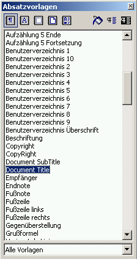
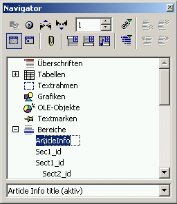
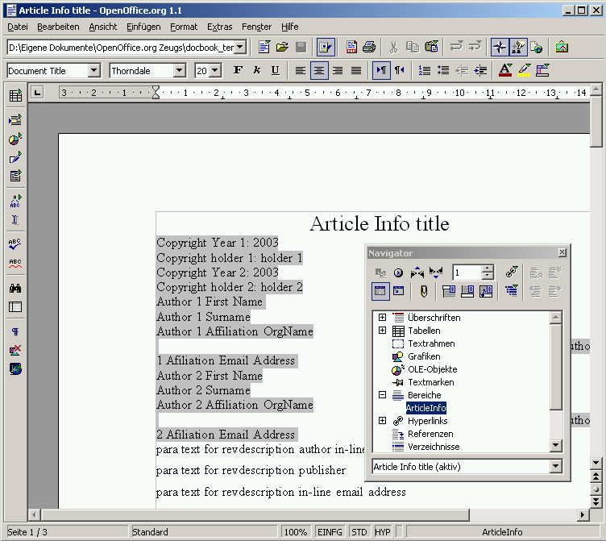
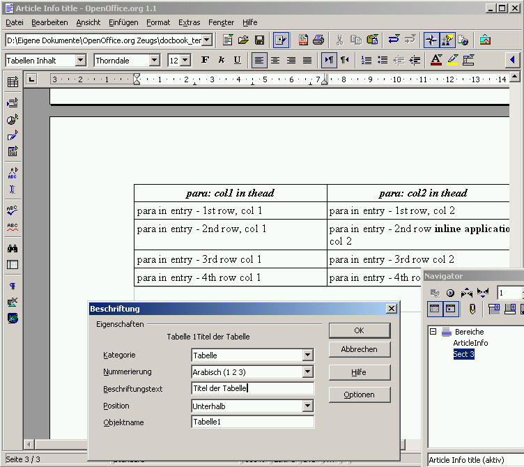
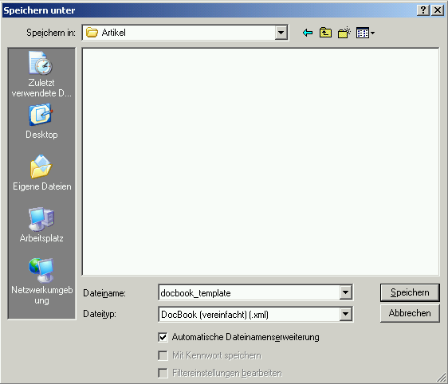

Erste Schritte mit DocBook und OpenOffice.org
OpenOffice.org als DocBook-XML-Editor
An wen wendet sich dieser Führer?
Dieser Führer soll ein Startpunkt für denjenigen sein, der mit OpenOffice.org
DocBook-Dokumente erstellen oder bearbeiten möchte. Er behandelt nicht
alle Funktionen, die der DocBook-Filter im Moment unterstützt, sondern
konzentriert sich auf die erforderlichen Schritte, um mit OpenOffice.org DocBook-Dateien
zu bearbeiten und zu erstellen.
|
|
In OpenOffice.org 1.1 Beta 2 Deutsch sind die DocBook-Filter schon aktiviert. Wenn Sie OpenOffice.org 1.1 Beta 1 benutzen, müssen Sie die Filter manuell installieren. |

Bevor Sie beginnen
Es gibt eine Dokumentenvorlage, die alle derzeit unterstützten Benutzervorlagen enthält. Laden Sie die Vorlage DocBookTemplate.stw, damit alle von DocBook benötigten Vorlagen zur Verfügung stehen. Öffnen Sie den Stylisten mit <F11> und wählen Sie „Alle“, damit Sie alle vorhanden Vorlagen sehen können.

Navigation durch ein Dokument
Wenn Sie sehen möchten, wie Bereiche verbunden sind, dann öffnen Sie mit <F5> den Navigator. Klappen Sie das Bereichs-Tag, um das Layout der Bereiche dieses Dokuments darzustellen. Sie können zum Anfang eines bestimmten Bereichs springen, indem Sie ihn im Navigator doppelklicken.

Den Titel des Dokuments festlegen
Gehen Sie zum Bereich ArticleInfo, indem Sie ihn im Navigator doppelklicken. Wählen Sie die Vorlage Document Title aus der Vorlagenliste und geben Sie dann den Titel des Dokuments ein. Dieser Titel wird das ArticleInfo-Titel-Element, wenn das Dokument im DocBook-Format gespeichert wird.

Sect1, Sect2,Sect3 anlegen
Um einen Bereich anzulegen, wählen Sie Einfügen -> Bereich aus dem Menü. Geben Sie dem Bereich einen Namen und klicken Sie auf Einfügen. Der neue Bereich wird nun angezeigt. Der Name, den Sie dem Bereich gegeben haben, wird die Bereichs-ID im fertigen DocBook-Dokument. Um einem Bereich einen Titel zu geben, wählen Sie entweder Section Title oder eine der Section# Title-Vorlage. Im endgültigen DocBook-Dokument wird die Vorlage Section Title in ein Title-Tag innerhalb dieses Bereichs umgewandelt.
Wenn Sie während der Texteingabe den im Moment editierten Bereich verlassen möchten, dann drücken Sie <ALT> + <Return>.
Eine Tabelle hinzufügen
Wählen Sie Einfügen -> Tabelle aus dem Menü, um eine Tabelle einzufügen. Im Dialog Tabelle einfügen können Sie die Eigenschaften der Tabelle einstellen. Ist dies getan, dann klicken Sie auf OK. Der Name der Tabelle wird das id-Attribut der DocBook-Tabelle.
Um der Tabelle einen Namen zu geben und sie somit zu einer Formalen Tabelle zu machen, rechtsklicken Sie auf die Tabelle im Editor-Fenster und wählen Sie im Kontextmenü Beschriftung. Der Beschriftungstext wird zum Titel der Tabelle.

Alternative Zeichenvorlagen
DocBook erlaubt es, dass Absätze verschiedene Arten von formatiertem Text (stark betont, hoch gestellt, tief gestellt, Dateiname, Befehl etc.) enthalten können. Um diese Vorlagen einem markierten Text zu applizieren, gehen Sie folgendermaßen vor.
Wählen Sie den Text, den sie modifizieren möchten.
Wählen Sie das Zeichenvorlagen-Icon im Stylisten.
Wählen Sie die Zeichenvorlage, die sie applizieren möchten, aus.
Als DocBook speichern
Um Ihr Dokument im DocBook-Format zu speichern, wählen Sie Datei -> Speichern unter aus dem Menü. In der Auswahlliste Dateityp wählen Sie DocBook (vereinfacht) (.xml). Mit dem Speichern-Button können Sie das Dokument dann im DocBook-Format speichern.

Beispiel
Hier finden Sie ein Beispiel, was der DocBook-Filter ausgibt.
<?xml version="1.0" encoding="UTF-8"?> <article lang="en-US"> <articleinfo> <title>My Document Title</title> <subtitle>My Document Subtitle</subtitle> <edition /> </articleinfo> <sect1 id="Sect1"> <title>Section1 title </title> <para>Some random text</para> <sect2 id="Sect2"> <title>Section 2 Title</title> <para>Some more Text with
<emphasis>emphasis</emphasis> </para> <table frame="all" id="myTable"> <title>My table Name</title> <tgroup cols="6"> <colspec colnum="1" colname="c1" /> <colspec colnum="2" colname="c2" /> <colspec colnum="3" colname="c3" /> <colspec colnum="4" colname="c4" /> <colspec colnum="5" colname="c5" /> <colspec colnum="6" colname="c6" /> <thead> <row> <entry> <para>Header</para> </entry> <entry> <para>Rows</para> </entry> <entry> <para /> </entry> <entry> <para /> </entry> <entry> <para /> </entry> </row> </thead> <tbody> <row> <entry> <para /> </entry> <entry> <para>Content </para> </entry> <entry> <para>Rows</para> </entry> <entry> <para /> </entry> <entry> <para /> </entry> </row> </tbody> </tgroup> </table> <para /> </sect2></sect1></article>Das englischsprachige Originaldokument finden Sie hier.